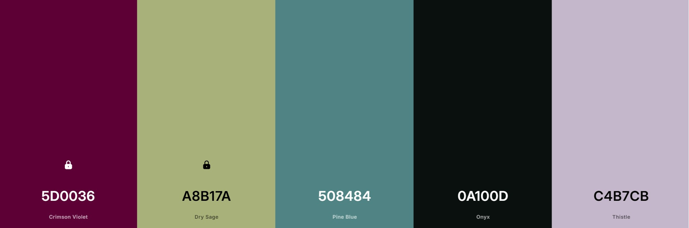

Witaj na mojej stronie! To moje osobiste portfolio, na którym przedstawiam siebie, swoje doświadczenie zawodowe i projekty związane z analizą danych oraz uczeniem maszynowym.
W zakładce O mnie dowiesz się, czym się zajmuję i co mnie interesuje. Doświadczenie to przegląd moich dotychczasowych stanowisk, a w Projektach znajdziesz linki do repozytoriów na GitHubie. Jeśli chcesz się ze mną skontaktować, skorzystaj z formularza w zakładce Kontakt.
